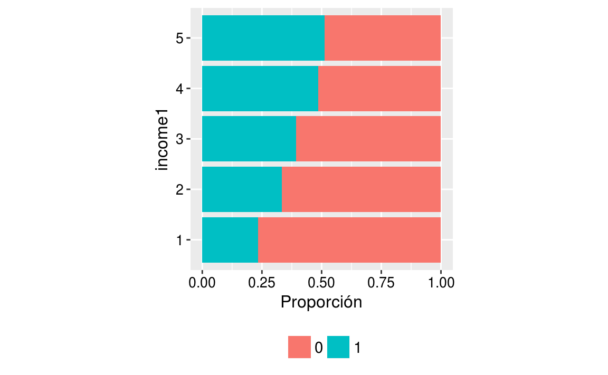
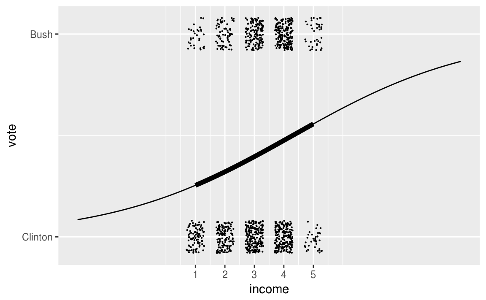
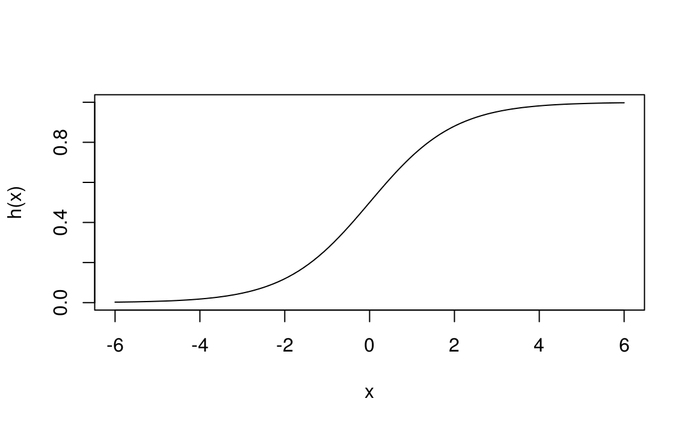
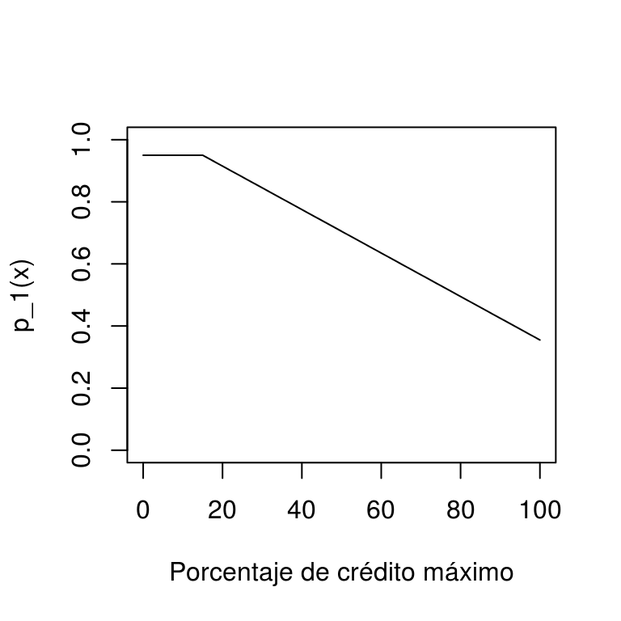
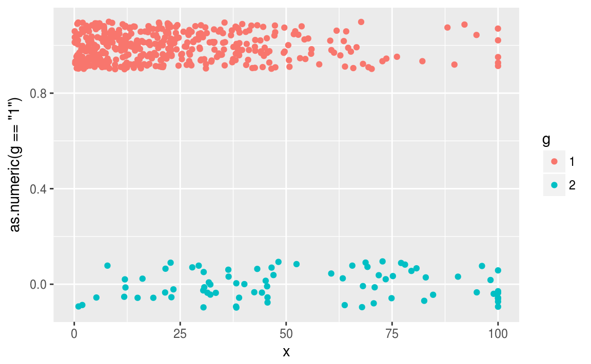
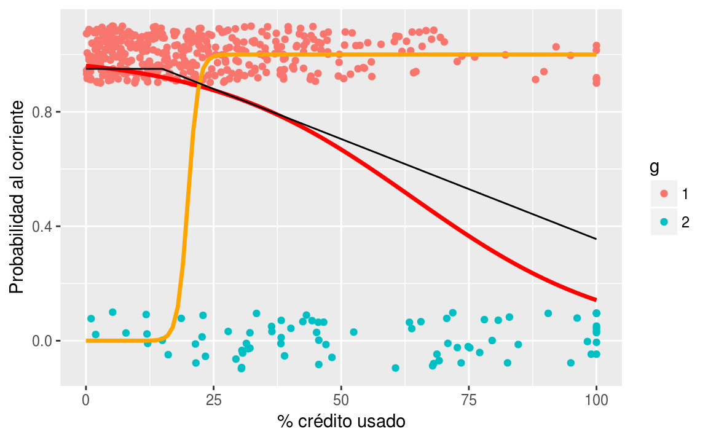
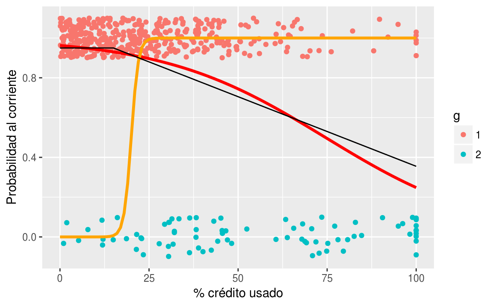

Clase 6 Regresión logística
La regresión logística es la forma estándar de modelar los resultados binarios (es decir, los datos \(y_i\) que toman los valores \(0\) o \(1\)).
6.1 Regresión logística con un solo predictor
library(arm)Los científicos políticos han estado interesados en la identificación de partidos y sus cambios a lo largo del tiempo. Ilustramos aquí con una serie de regresiones transversales que modelan la identificación del partido dada la ideología política y las variables demográficas.
Usamos una encuesta llamada National Election Study.
brdata <- read_csv("datos/nes.csv")Contamos con los siguientes predictores:
identificación con un partido en una escala de 1-7 (1 = demócrata fuerte, 2 = demócrata, 3 = demócrata débil, 4 = independiente, …, 7 = republicano fuerte), que tratamos como una variable continua.
ideología política (1 = fuerte liberal, 2 = liberal,., 7 = fuerte conservador),
etnia (0 = blanco, 1 = negro, 0.5 = otro),
edad (como categorías: 18- 29, 30-44, 45-64 y más de 65 años, con la categoría de edad más baja como referencia),
educación (1 = sin escuela secundaria, 2 = graduado de la escuela secundaria, 3 = algunos estudios universitarios, 4 = graduado de la universidad),
sexo (0 = hombre, 1 = mujer),
ingreso (1 = percentil 0-16, 2 = percentil 17-33, 3 = percentil 34-67, 4 = percentil 68-95, 5 = percentil 96-100).
Los partidos conservadores generalmente reciben más apoyo entre los votantes con mayores ingresos. Veamos cómo usar la regresión logística clásica con un análisis simple de este patrón de las elecciones de Estados Unidos en 1992.
datos <- brdata %>%
filter(!is.na(black) & !is.na(female) & !is.na(educ1) &
!is.na(age) & !is.na(income) & !is.na(state)) %>%
filter(!is.na(year)) %>%
filter(year %in% 1952:2000) %>%
mutate(year.new = match(year, unique(year)),
income.new = income - 3,
age.new = (age - mean(age))/10,
y = rep_pres_intent,
age.discrete = as.numeric(cut(age, c(0,29.5, 44.5, 64.5, 200))),
race.adj = ifelse(race >= 3, 1.5, race) - 1,
gender = gender - 1)Para cada encuestado ponemos \(y_i=1\) si el encuestado prefería a George Bush (el candidato Republicano a presidente) o \(y_i=0\) si prefería a Bill Clinton (el candidato Demócrata). Por ahora excluímos a los encuestados que preferían a Ross Perot u otros candidatos, o que no tenían opinión.
datos_2 <- datos %>%
filter(year == 1992 & presvote < 3) %>%
mutate(vote = presvote - 1) %>%
dplyr::select(year, age, age.new, gender, race.adj, educ1, vote, income, income.new)
datos_2 %>% sample_n(10) %>% knitr::kable()| year | age | age.new | gender | race.adj | educ1 | vote | income | income.new |
|---|---|---|---|---|---|---|---|---|
| 1992 | 46 | 0.055 | 1 | 1.0 | 3 | 0 | 4 | 1 |
| 1992 | 40 | -0.545 | 1 | 0.0 | 4 | 0 | 3 | 0 |
| 1992 | 61 | 1.555 | 0 | 0.0 | 4 | 1 | 4 | 1 |
| 1992 | 45 | -0.045 | 1 | 1.0 | 3 | 0 | 3 | 0 |
| 1992 | 20 | -2.545 | 0 | 0.5 | 3 | 0 | 1 | -2 |
| 1992 | 79 | 3.355 | 1 | 1.0 | 2 | 0 | 1 | -2 |
| 1992 | 77 | 3.155 | 1 | 0.0 | 2 | 0 | 3 | 0 |
| 1992 | 63 | 1.755 | 1 | 0.0 | 3 | 1 | 2 | -1 |
| 1992 | 53 | 0.755 | 1 | 0.0 | 2 | 1 | 2 | -1 |
| 1992 | 25 | -2.045 | 1 | 0.0 | 4 | 0 | 3 | 0 |
Dado que nuestra variable de ingreso es categórica y la preferencia de voto que analizamos es binaria podríamos comenzar haciendo un análisis de datos categóricos:
tab <- round(prop.table(table(datos_2$income, datos_2$vote), 1)*100,2) %>%
as_tibble() %>%
spread(Var2, n) %>%
dplyr::select(Income=Var1, Clinton=`0`, Bush=`1`)
tab %>% knitr::kable()| Income | Clinton | Bush |
|---|---|---|
| 1 | 76.6 | 23.4 |
| 2 | 66.7 | 33.3 |
| 3 | 60.7 | 39.3 |
| 4 | 51.5 | 48.5 |
| 5 | 48.6 | 51.4 |
En una gráfica de mosaico vemos los siguiente:
aux <- datos_2 %>%
dplyr::select(c("vote","income")) %>%
mutate(vote1 = ordered(vote), income1 = ordered(income))
ggplot(aux, aes(x=income1, fill=vote1)) +
geom_bar(position='fill') +
coord_flip() +
theme(aspect.ratio = 1,legend.position="bottom",
axis.text.y=element_text(color='black',size=10),
axis.text.x=element_text(color='black',size=10),
axis.title.x=element_text(size=12),
axis.title.y=element_text(size=12),
legend.text=element_text(size=11)) +
scale_fill_discrete("") +
ylab('Proporción')
Para podríamos introducir perfiles de variables de ingreso para obtener una mejor intuición. Utilizando el método de regresión logística obtendríamos lo siguiente:
# Estimacion
fit.1 <- glm(vote ~ income, data = datos_2, family=binomial(link="logit"))
display(fit.1)
#> glm(formula = vote ~ income, family = binomial(link = "logit"),
#> data = datos_2)
#> coef.est coef.se
#> (Intercept) -1.40 0.19
#> income 0.33 0.06
#> ---
#> n = 1179, k = 2
#> residual deviance = 1556.9, null deviance = 1591.2 (difference = 34.3)Con este modelo buscamos predecir las preferencias dado el nivel de ingresos del encuestado, que se caracteriza por una escala de cinco puntos.
El modelo ajustado es \[ P(y_i=1) = \mbox{logit}^{-1}(−1.40 + 0.33\,\cdot\,\mbox{income}) \]
Definimos así una función que llamamos logit inversa y de la cuál hablaremos más adelante:
invlogit <- function(x){
exp(x)/(1+exp(x))
}En la siguiente gráfica podemos ver los valores de la variable categórica de ingreso con un jitter y la función ajustada por el modelo:
ggplot(datos_2, aes(x = income, y = vote)) +
geom_jitter(width = 0.3, height = 0.08, size = 0.1) +
stat_function(fun = function(x){invlogit(fit.1$coef[1] + fit.1$coef[2]*x)}, xlim = c(1,5), size=2) +
stat_function(fun = function(x){invlogit(fit.1$coef[1] + fit.1$coef[2]*x)}, xlim = c(-3,10)) +
scale_x_continuous(limits = c(-3, 10), breaks = 1:5) +
scale_y_continuous(breaks = c(0,1), labels=c("Clinton","Bush")) 
En este ejemplo, estos puntos revelan muy poca información, pero queremos enfatizar que los datos y el modelo ajustado se pueden poner en una escala común.
Definiremos matemáticamente este modelo y luego regresaremos para analizar su interpretación.
6.2 El modelo de regresión logística
No tendría sentido ajustar el modelo de regresión lineal continuo, \(X\beta + \mbox{error}\), a los datos de \(y\), que toman los valores de \(0\) y \(1\). Notemos que intentar estimar las probabilidades de clase \(p_1(x)\) de forma lineal con
\[p_1(x)=\beta_0+\beta_1 x_1\]
tiene el defecto de que el lado derecho puede producir valores fuera de \([0,1]\). La idea es entonces aplicar una función \(h\) simple que transforme la recta real al intervalo \([0,1]:\) \[p_1(x) = h(\beta_0+\beta_1 x_1),\] donde \(h\) es una función que toma valores en \([0,1]\). ¿Cúal es la función más simple que hace esto?
6.2.1 Función logística
Comenzamos con el caso más simple, poniendo \(\beta_0=0\) y \(\beta_1=1\), de modo que \[p_1(x)=h(x).\] ¿Cómo debe ser \(h\) para garantizar que \(h(x)\) está entre 0 y 1 para toda \(x\)? No van a funcionar polinomios, por ejemplo, porque para un polinomio cuando \(x\) tiende a infinito, el polinomio tiende a \(\infty\) o a \(-\infty\). Hay varias posibilidades, pero una de las más simples es la función logística.
h <- function(x){exp(x)/(1+exp(x)) }
curve(h, from=-6, to =6)
Esta función comprime adecuadamente (para nuestros propósitos) el rango de todos los reales dentro del intervalo \([0,1]\).
Este es un modelo paramétrico con 2 parámetros.
Ejemplo
(Impago de tarjetas de crédito) Supongamos que \(X=\) porcentaje del crédito máximo usado, y \(G\in\{1, 2\}\), donde \(1\) corresponde al corriente y \(2\) representa impago. Las probabilidades condicionales de clase para la clase al corriente podrían ser, por ejemplo:
- \(p_1(x) = P(G=1|X = x) =0.95\) si \(x < 15\%\)
- \(p_1(x) = P(G=1|X = x) = 0.95 - 0.007(x-15)\) si \(x>=15\%\)
Estas son probabilidades, pues hay otras variables que influyen en que un cliente permanezca al corriente o no en sus pagos más allá de información contenida en el porcentaje de crédito usado. Nótese que estas probabilidades son diferentes a las no condicionadas, por ejempo, podríamos tener que a total \(P(G=1)=0.83\).
p_1 <- function(x){
ifelse(x < 15, 0.95, 0.95 - 0.007 * (x - 15))
}
curve(p_1, 0,100, xlab = 'Porcentaje de crédito máximo', ylab = 'p_1(x)',
ylim = c(0,1))
Vamos a generar unos datos con un modelo simple:
set.seed(1933)
x <- pmin(rexp(500,1/30),100)
probs <- p_1(x)
g <- ifelse(rbinom(length(x), 1, probs)==1 ,1, 2)
dat_ent <- data_frame(x = x, p_1 = probs, g = factor(g))
dat_ent %>% dplyr::select(x, g)
#> # A tibble: 500 x 2
#> x g
#> <dbl> <fct>
#> 1 0.532 1
#> 2 25.4 1
#> 3 37.5 1
#> 4 20.9 1
#> 5 70.9 2
#> 6 14.8 1
#> # ... with 494 more rowsComo este problema es de dos clases, podemos graficar como sigue:
graf_1 <- ggplot(dat_ent, aes(x = x)) +
geom_jitter(aes(colour = g, y = as.numeric(g=='1')), width=0, height=0.1)
graf_1
Ahora intentaremos ajustar a mano (intenta cambiar las betas para p_mod_1 y p_mod_2 en el ejemplo de abajo) algunos modelos logísticos para las probabilidades de clase:
graf_data <- data_frame(x = seq(0,100, 1))
h <- function(z) exp(z)/(1+exp(z))
p_logistico <- function(beta_0, beta_1){
p <- function(x){
z <- beta_0 + beta_1*x
h(z)
}
}
p_mod_1 <- p_logistico(-20, 1)
p_mod_2 <- p_logistico(3.2, -0.05)
graf_data <- graf_data %>%
mutate(p_mod_1 = p_mod_1(x), p_mod_2 = p_mod_2(x))
graf_verdadero <- data_frame(x = 0:100, p_1 = p_1(x))
graf_1 +
geom_line(data = graf_data, aes(y = p_mod_2), colour = 'red', size=1.2) +
geom_line(data = graf_data, aes(y = p_mod_1), colour = 'orange', size=1.2) +
geom_line(data = graf_verdadero, aes(y = p_1)) +
ylab('Probabilidad al corriente') + xlab('% crédito usado')
Podemos usar también la función glm de R para ajustar los coeficientes:
mod_1 <- glm(g==1 ~ x, data = dat_ent, family = 'binomial')
coef(mod_1)
#> (Intercept) x
#> 3.2447 -0.0435
p_mod_final <- p_logistico(coef(mod_1)[1], coef(mod_1)[2])
graf_data <- graf_data %>%
mutate(p_mod_f = p_mod_final(x))
graf_1 +
geom_line(data = graf_data, aes(y = p_mod_f), colour = 'red', size=1.2) +
geom_line(data = graf_data, aes(y = p_mod_1), colour = 'orange', size=1.2) +
geom_line(data = graf_verdadero, aes(y = p_1)) +
ylab('Probabilidad al corriente') + xlab('% crédito usado')
Por lo tanto, modelamos la probabilidad de que \(y = 1\), como
\[ P(y_i=1)=\mbox{logit}^{-1}(X_i\beta), \]
bajo el supuesto de que las respuestas \(y_i\) son independientes dadas estas probabilidades. Nos referimos a \(X\beta\) como el predictor lineal.
La función logística definida anteriormente \(h(x)=\dfrac{e^x}{1+e^x}\) es \(\mbox{logit}^{-1}\), la función inversa de logit.6.3 Tarea
Demostrar que, si \(p_1(x)\) está dado como \[ p_1(x)=p_1(x;\beta)= h(\beta_0+\beta_1x_1)= \frac{e^{\beta_0+\beta_1x_1}}{1+ e^{\beta_0+\beta_1x_1}} \] entonces también podemos escribir: \[p_0(x)=\frac{1}{1+e^{\beta_0+\beta_1x_1}}.\]
Graficar la función \(p_1(x;\beta)\) para distintos valores de \(\beta_0\) y \(\beta_1\).